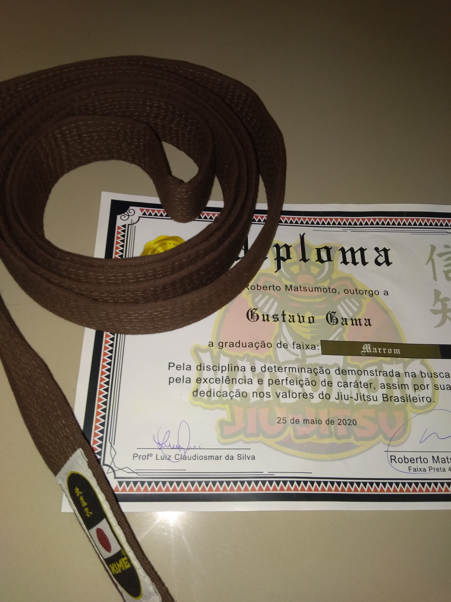

Há três vertentes para a origem da arte suave, mas a mais difundida conta que o jiu jitsu surgiu no Japão. Outra versão fala que surgiu na Índia, onde era praticado pelos monges budistas, sendo levado para a China e depois para o Japão, acompanhando a expansão do Budismo. A terceira vertente sustenta que surgiu na China.
Apesar das divergências quanto à origem, há consenso que foi no Japão, através das escolas de samurais, que as técnicas e golpes foram desenvolvidas. Naquela época, o jiu jitsu surgiu como uma arte marcial que se diferenciava das técnicas rígidas, nas quais usava-se armas, como espadas ou punhais. Segundo os japoneses, trabalha com técnicas de autodefesa que estão ligadas a filosofia de pensamento do budismo, fundamentando-se somente na inteligência, não sendo preciso usar a força bruta.
O primeiro registro da palavra Jiu-Jitsu ocorreu em 1532, criada por Hisamori Tenenuchi, fundador da primeira escola de jiu-jitsu no Japão. Porém, de início, o Jiu jitsu não bem era visto. Até que surgiu Jigoro Kano, um mestre japonês, homem sábio, membro do departamento cultural e praticante de jiu-jitsu que revolucionou as técnicas da luta, no final dos anos de 1800, criando sua própria versão, que chamou de judô, com os mesmos fundamentos de combate que o antigo jiu-jitsu
Por volta de 1914, chega ao Brasil Mitsuyo Maeda, mestre japonês em lutas marciais, também conhecido como Conde Koma. Depois de percorrer alguns países como o Reino Unido, México, Cuba e França, Maeda chegou ao Brasil fazendo demonstrações e lutas e fixa-se em Belém do Pará. Nessa época, havia uma confusão quanto ao nome da luta e até no Japão, o termo “ju jutsu” ou” kano ju -jutsu” era utilizado se referindo à parte técnica, e o termo “judô” quando se referia à parte filosófica. Somente em 1925 o governo japonês oficializou o nome judô, nomeando assim a luta que era ensinada nas escolas publicas do país.
| Tabela de Tamanhos |
|---|
| Keiko A1 |
| Keiko A2 |
| Keiko A3 |
| Keiko A4 |
| Keiko A5 |
| Keiko A6 |
PROVA DE BOOTSRAP